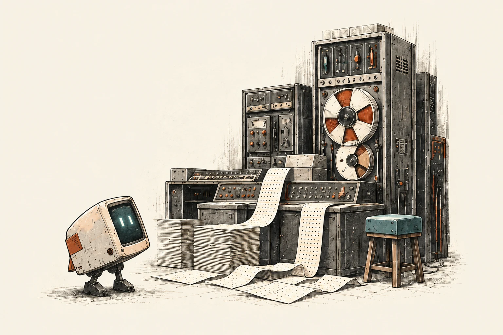
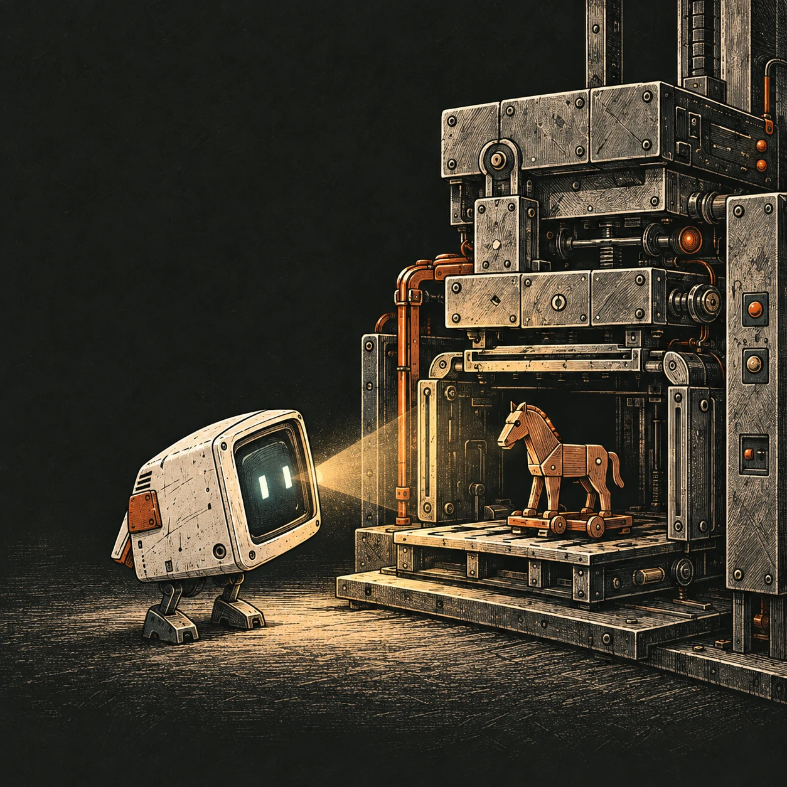

The Art of Doing Science and Engineering
Ch. 4 - A History of Software

Thoughts and Structure
- Amazingly prescient commentary.
- A lot of controversial takes!
- Longer chapter, lot of topics highly relevant.
Thoughts and Structure
- Quotes worth discussing
- Some commentary on top
A Progression from Binary to Compilers
“In the beginning we programmed in absolute binary, meaning we wrote the actual address where things were in binary, and wrote the instruction part also in binary!”
A Progression from Binary to Compilers
“If [you] wanted to insert some omitted instructions, then you took the immediately preceding instruction and replaced it by a transfer to some empty space. There you put in the instruction you just wrote over, added the instructions you wanted to insert, followed by a transfer back to the main program”
- Monolithic Programs -> Procedures -> Functions
- Composability as a general catalyst to emergence
A Progression from Binary to Compilers
“Someone got the idea a short piece of program could be written which would read in the symbolic names of the operations (like ADD) and translate them at input time to the binary representations used inside the machine (say 01100101).”
- Symbolic Addresses -> registers! Stack vars!
A Progression from Binary to Compilers
“One of the main complaints was when using a symbolic system you didn’t know where anything was in storage
Rather than realize they did not need to know that information if they stuck to operating within the system”
A Progression from Binary to Compilers
“When, and only when, you have a totally virtual machine will you have the ability to transfer software from one machine to another without almost endless trouble and errors.”
What are some super successful “virtual machines” we know now!
- Java and the JVM
- LLVM
- What else?
So Many VMs
“When, and only when, you have a totally virtual machine will you have the ability to transfer software from one machine to another without almost endless trouble and errors.”
What are some super successful “virtual machines” we know now!
- Java and the JVM
- LLVM
- Browsers and the JS Engines
- Ethereum and the EVM
- Python and the PyVM!
So Many VMs
Closing the seemingly infinite gap between the language of our thoughts and the language of the machine’s thoughts.
Question: Is the gap between thought and code a limitation of our languages, or of how clearly we know what we want?
So Many VMs
Closing the seemingly infinite gap between the language of our thoughts and the language of the machine’s thoughts.
Question: Is the gap between thought and code a limitation of our languages, or of how clearly we know what we want?
Urge to read Trusting Trust by Ken Thompson
“To what extent should one trust a statement that a program is free of Trojan horses? Perhaps it is more important to trust the people who wrote the software.”

So Many VMs
We yearn for standardization.
Uncertainty reduction as a fundamental labor of the human condition.
But not too much right?
Extremums at
(nihilism, anarchy) <==> (loss of individuality, pluribus!)
When does standardization enable individuality, and when does it suppress it?
Blindspots
“Almost everyone who opens up a new field does not really understand it the way the followers do.”
Blindspots
“That a language is easy for the computer expert does not mean it is necessarily easy for the non-expert, and it is likely non-experts will do the bulk of the programming (coding, if you wish) in the near future.”
Question: What languages do you reach for, in areas where
- You have expertise
- You have no expertise
Blindspots
“That a language is easy for the computer expert does not mean it is necessarily easy for the non-expert, and it is likely non-experts will do the bulk of the programming (coding, if you wish) in the near future.”
Question: What languages do you reach for, in areas where
- You have expertise - Go
- You have no expertise - English!
Ambiguity Begets Creativity
“One trouble with much of programming is simply that often there is not a well-defined job to be done; rather, the programming process itself will gradually discover what the problem is!”
- I think this is a good thing!
- Relevant - Peter Naur’s Programming as Theory Building
Question: When an AI writes the implementation, where does the discovery of the problem happen?